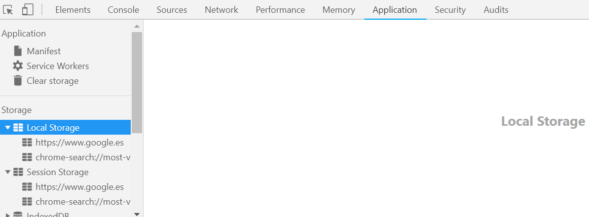
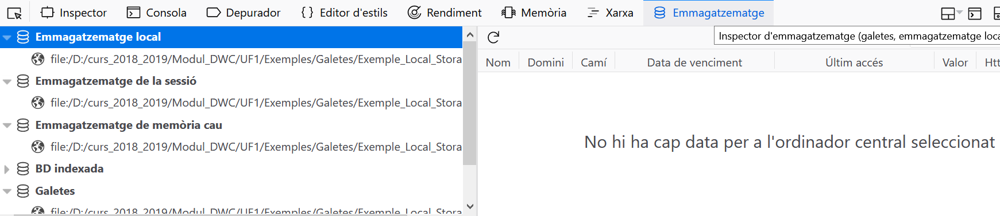

Web Storage apareix amb HTML5 i es presenta com a alternativa a les galetes (cookies) per a emmagatzemar informació de les pàgines web en el costat del client.
A diferència de les galetes que només permeten emmagatzemar fins a 4 kB d'informació, amb Web Storage podem emmagatzemar fins a 5 MB. Aquesta capacitat la defineix el navegador, de manera que depenent del navegador que utilitzem aquesta capacitat pot ser més gran.
A diferència de les galetes, les dades emmagatzemades amb Web Storage no s'envien automàticament al servidor. Això redueix el pes de cada petició al servidor; per aquest mateix motiu, només es pot accedir a la informació emmagatzemada des de la part del client, és a dir, no hi ha un mecanisme per a accedir-hi directament des d'un llenguatge de programació del costat del servidor com podria ser PHP.
Hi ha dos tipus d'emmagatzematge: localStorage i sessionStorage. La diferència entre tots dos és que el primer conserva la informació permanentment fins que es netegi la memòria cau (cache) del navegador, mentre que en el segon la informació es manté fins que es tanca la sessió o, el que és el mateix, fins que es tanca la pestanya que conté el nostre web.
La manera d'arxivar i accedir a les dades és igual en tots dos casos:
localStorage
sessionStorage
, així que s'explica tot fent us de localStorage.
Es pot saber si el navegador de l'usuari és compatible amb Web Storage utilitzant el codi següent:
//Es pot utilitzar l'objete localStorage o el sessionStorage
if(localStorage){
//Existeix localStorage i se'n pot fer ús per emmagatzematge
alert("El navegador és compatible amb localStorage ");
} else {
//No existeix localStorage
alert("El navegador no és compatible amb localStorage ");
}
| Visualització des del Chrome --> Application | Visualització des del Firefox --> Emmagatzematge |
|  |  |
Per a emmagatzemar dades utilitzant Web Storage, cal tenir en compte un parell de coses: les dades només poden ser cadenes de text, i cada dada que emmagatzemem està relacionada amb la clau(=nom) que s'hagi assignat.
Hi ha tres maneres diferents d'emmagatzemar un valor:
localStorage.setItem('clau','valor');localStorage['clau'] = 'valor';localStorage.clau = 'valor';De la mateixa manera que teníem tres maneres diferents d’assignar valors, exiteixen tres maneres de recuperar un valor:
valor = localStorage.getItem('clau');valor = localStorage['clau'];valor = localStorage.clau;Es poden eliminar valors emmagatzemats utilitzant el mètode removeItem de la manera següent:
localStorage.removeItem('clau');
Si el que volem és eliminar tots els valors emmagatzemats, es pot fer amb el mètode clear:
localStorage.clear();
Atès que localStorage es comporta com una taula associativa, es poden consultar la quantitat d'elements emmagatzemats de la manera següent:
var total = localStorage.length;
També es pot obtenir el nom d'una clau determinada usant localStorage.key(i),
en què i és la posició de la clau.
Amb aquest mètode es poden recórrer tots els elements emmagatzemats a localStorage. Per exemple, amb aquest codi s'escriuen per consola totes les claus i valors corresponents:
for (var i=0; i < localStorage.length; i++) {
console.info("La clau "+localStorage.key(i)+" emmagatzem el valor "
+localStorage[localStorage.key(i)]);
}